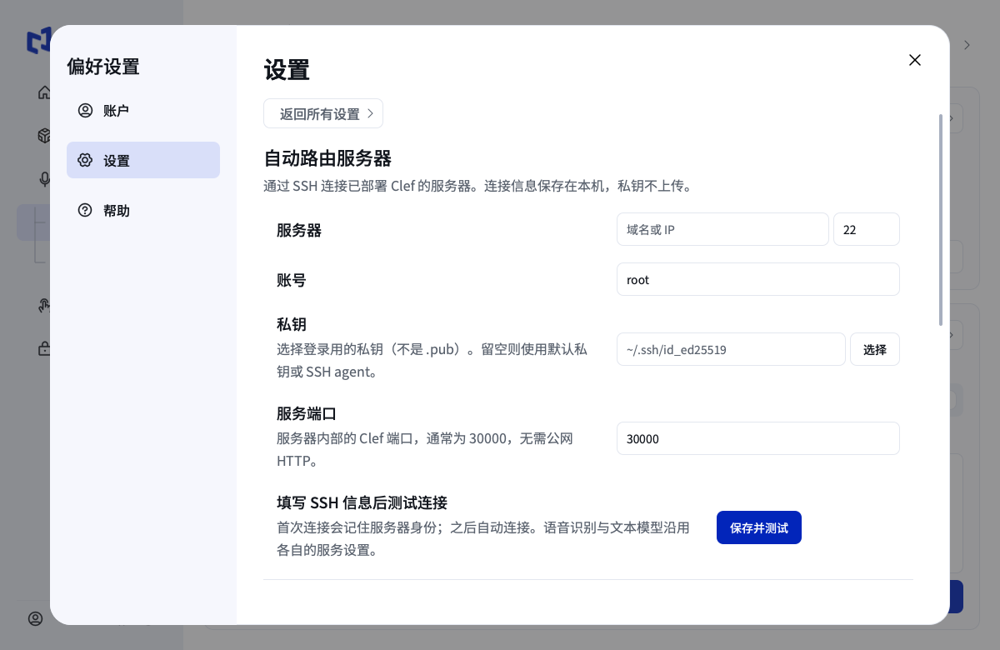

2026-11-05 · 已完成应用内 SSH 配置、统一结束语音、原生浮窗阶段显示，以及 DMG 内冻结程序的真实路由测试。
安装新版应用及随包输入法组件，在设置的服务设置中填写 SSH 地址、端口、账号和私钥，点击“保存并测试”，再选择“自动判断”。服务器内 Clef 端口默认为 30000；服务器需已部署并运行 Clef。ASR 与正文模型仍沿用各自设置。
应用管理独立回环 SSH 隧道，不需要公网 HTTP、开发机隧道或终端环境变量。私钥只引用本机文件；安装包不包含连接配置或开发者私钥。当前支持私钥 / SSH agent；加密私钥需预先解锁到钥匙串或 agent。

tap 和原转换编辑动作在自动模式下都只结束当前语音，然后一次联合分类。手动模式保持既有用途。自动浮窗隐藏右滑修改和下滑润色，保留结束、取消与撤销。
请说话 → 正在识别 → 正在判断 → 正在插入 / 润色等 → 正在编辑 / 正在听写 → 正在写入 → 已编辑 / 已听写。
按完整状态文本测量宽度，不省略任务名；约 0.2 秒平滑伸缩，新状态从当前显示宽度接续，支持系统减少动态效果。
下表延迟为路由 / 生成 / 合计，包含网络及客户端等待，不包含录音、ASR 和真实输入框写入。
| 用例 | 口述 | 实际输出 | 秒 |
|---|---|---|---|
| dictation | 明天开会。 | 明天开会。 | 2.401 / 2.810 / 5.210 |
| modify | 把三点改成四点 | 我们四点开会。 | 2.502 / 2.866 / 5.369 |
| insert | 在末尾加一句：谢谢配合。 | 请准时参加。谢谢配合。 | 2.878 / 1.718 / 4.596 |
| polish | 把语气改得更客气一点 | 麻烦你今天把材料发给我，可以吗？ | 2.533 / 1.888 / 4.421 |
| format | 把这三项排成编号列表，文字不变 | 1. 苹果 2. 香蕉 3. 橙子 | 2.482 / 1.724 / 4.207 |
| translate | 翻译成英文 | The meeting is at nine tomorrow morning. | 2.519 / 2.962 / 5.481 |
| compose | 帮我写一封邮件，通知同事明天的会议取消 | 各位同事： 大家好！ 原定于明天举行的会议取消，特此通知。 给大家带来的不便，敬请谅解。 谢谢！ 此致 敬礼 | 2.422 / 3.319 / 5.741 |
| modify-polish | 把三点改成四点，再把语气改得客气一点 | 麻烦您四点来开会。 | 2.547 / 2.404 / 4.950 |
本次没有第二台 Mac、真实 Ring 收音或每种外部编辑器的人工验收，不能据此承诺所有环境零问题。安装包已签名但未公证：构建环境没有可用的 Apple 公证配置，其他 Mac 首次打开可能需要系统确认。
扩大检查时，原有完整原生脚本的笔画浮窗定位断言在当前显示环境失败；本次语音专项不包含它。另一个现有快捷键录制测试只发送 key-down，而工作区当前录制逻辑等待 key-up，因此旧断言失败；未改动该独立功能。这两项不计入上述通过结果。冻结启动退出时还记录了既有 WindowSelector 空对象清理警告，启动探针退出码为 0。
DMG: Mythlink-0.6.8-macos-arm64.dmg · SHA-256: ed04a4d52c9744a384d74d06448c1a96cefd57e1c0240468195fa0efad9b6e74